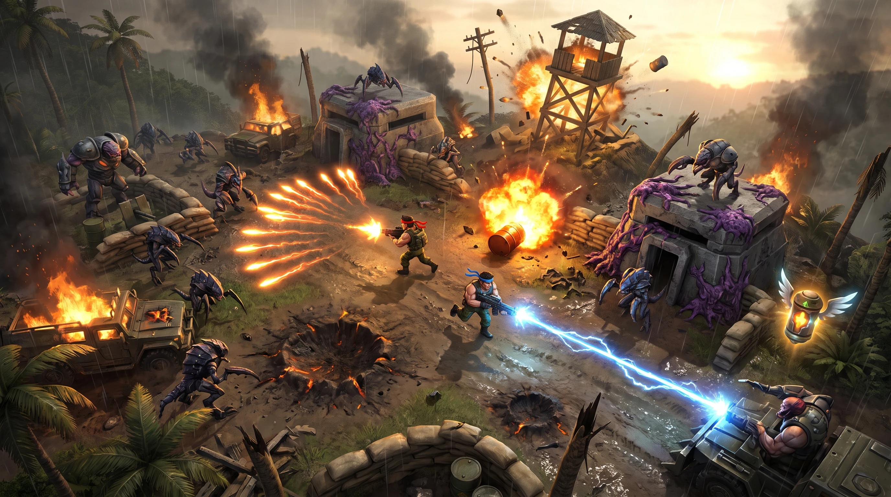
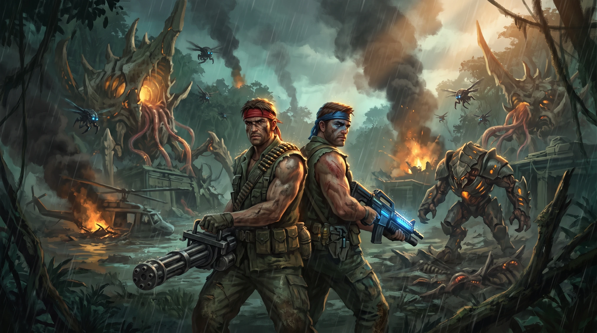

IronFall / concept art
IronFall · Concepts round 1
A modern 3D spin on the classic two-commando run-and-gun, seen from a high third-person overhead camera. This round tests the Gritty Commando direction with one gameplay mockup and one key art.
Direction: Gritty Commando, semi-realistic 1980s action-movie jungle war against an alien biomech hive. Model: Nano Banana Pro on Higgsfield, 16:9, 2K. Two images, about 4 credits. Click an image to inspect it at full size and download it.
A
Gameplay mockup: outpost overrun
What a moment of play could look like from the overhead camera
candidate
Nano Banana Pro · job ae3c5c2e-69c4-44ee-8bc4-839b29ae304b

Download original PNG (2752 × 1536)
Prompt
Saved generation prompt
In-game screenshot of a modern AAA top-down twin-stick shooter, high three-quarter overhead camera looking down at about 60 degrees, characters small in frame so the whole battlefield reads clearly. Semi-realistic gritty 1980s action-movie war aesthetic. Two muscular commandos in sleeveless fatigues, bandanas and tactical webbing, one with a red bandana and one with a blue bandana, run and gun through a burning jungle military outpost being overrun by alien biomechanical creatures: skittering insectoid drones, armored chitin brutes, and fleshy alien growth spreading over concrete bunkers. One commando fires a spread gun throwing a wide fan of glowing orange plasma bolts; the other fires a crackling blue laser beam. A wooden watchtower collapses mid-explosion, a sandbag wall bursts into debris, a fuel barrel detonates with a fireball and shockwave, splintered palm trees, scorched craters, muddy ground, rain-slicked concrete, drifting smoke. A small winged weapon capsule glows in the air as a power-up pickup. Dramatic volumetric lighting, sunset haze through smoke, cinematic color grade with warm fire against cold teal shadows, physically based materials, Unreal Engine 5 quality. Clean readable gameplay composition, no HUD, no text, no logos.
What works
- The overhead camera reads as a playable view, and the two heroes are easy to tell apart by bandana color.
- The weapons read instantly: an orange spread fan and a blue lightning laser.
- It shows a full set of destruction: a collapsing watchtower, a barrel blast, burst sandbags, craters and burning jeeps.
- The winged power-up capsule is a clear nod to the classic weapon pods.
- Purple alien growth on the bunkers marks infested ground.
Issues
- It came out as a detailed painting rather than a semi-realistic in-engine render.
- The camera is lower than a real gameplay camera. The sky and horizon are visible.
- An unrequested third figure mans a turret in the bottom-right corner.
- The insectoid drones are close to a famous film alien's silhouette. Our alien faction needs its own design.
- The frame is very busy. In real play, enemy bullets would get lost among the fire and debris.
B
Key art: back to back
Heroes, the alien faction and the tone of the game
candidate
Nano Banana Pro · job efa6d86c-34b2-40d3-b424-58cdfff47864

Download original PNG (2752 × 1536)
Prompt
Saved generation prompt
Key art concept painting for a gritty sci-fi military action game. Two battle-hardened commandos stand back to back in the foreground, low-angle heroic framing: one with a red bandana holding a heavy multi-barrel spread gun, one with a blue bandana holding an energy rifle, both in torn sleeveless fatigues with ammo belts and tactical webbing, scars, sweat and mud, modern tactical gear blended with 1980s action-movie style. Behind them a ruined jungle military base is overrun by an alien biomechanical invasion: swarms of insectoid drones, a hulking armored chitin brute, and a towering hive structure of bone, flesh and metal pipes rising from the jungle canopy, laced with glowing amber alien veins. Burning helicopter wreckage, smoke columns, rain, explosions, dramatic rim light, volumetric god rays, semi-realistic painterly rendering with detailed materials, cinematic color grade with warm fire against cold teal shadows. Wide 16:9 composition, no text, no logos.
What works
- The back-to-back pose, red and blue identities and scarred 80s action-hero look land well.
- The tentacled hive towers with glowing amber cores give the alien faction a memorable landmark.
- The armored brute reads as a mini-boss, and the flying drones as a light air unit.
Issues
- The red commando holds a standard minigun, not a spread gun.
- It's poster-style illustration, not an in-game look.
- The faces are generic.
- The palette leans teal-green, and the requested warm fire is only a small accent.
What this means for the engine choice
Mockup A's level of detail (volumetric smoke, dozens of fire lights, rain, heavy debris) matches Unity or Unreal at full fidelity. A Three.js version can get close to A's painted, stylized-realistic look with baked lighting, particle smoke, bloom and instanced debris, but not true Unreal Engine 5 realism. Decide how realistic the game should be before choosing the engine.
Next round options
- True gameplay camera: a higher, near-overhead view with no horizon, a calmer frame and readable enemy fire, rendered as an in-engine 3D screenshot.
- Commando character sheet: the red and blue heroes from front, side and back, as a reference for 3D modeling.
- Original alien faction: a lineup of swarm drone, armored brute, flyer and hive tower, pushed away from familiar film aliens.
- Weapons and power-ups: spread, laser, flame, homing and rapid fire as top-down readable pickups and projectile effects.